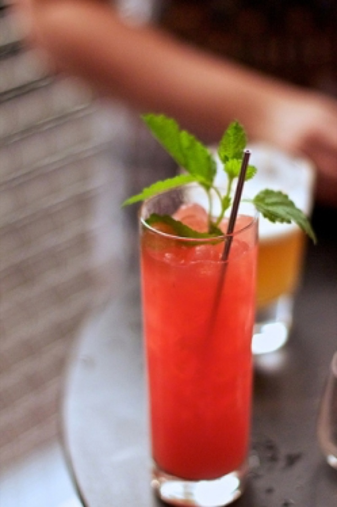
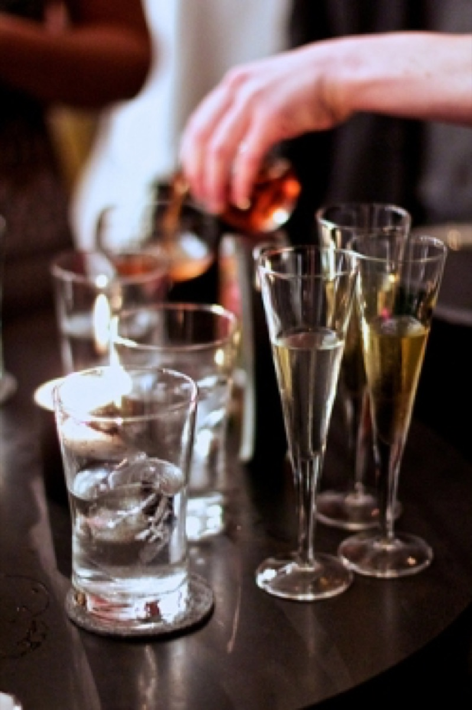

Next & Aviary
Last weekend, I had the good fortune to visit Next and The Aviary, the new Chicago restaurant and cocktail bar from Grant Achatz and Nick Kokonas. It was an incredibly decadent evening and one of the best dining experiences of my life. The theme of the first Next menu is Paris 1906 - Escoffier at the Ritz. Every detail - from the silver serving platters to the superb wine pairings - created a unique and memorable dining experience.
First course: Hors d’Oeuvres. Eggshell filled with truffle-topped egg custard, toast with foie gras and apricot jam, quail egg with anchovy, cracker with pork rillettes, and mushroom and leek.
Third course: Filet de Sole Daumont. Sole and crawfish including a crawfish-stuffed mushroom and breaded sole roe.
Fifth course: Caneton Rouennais à la Presse. Duck breast and leg with duck jus prepared using an antique duck press. You can see the duck press in action here.
Eighth course: Mignardises. Included beet pate de fruit, salted caramel and pistachio nougat. You can view pictures of all eight courses on my flickr page.
After dinner, we were welcomed into the Next kitchen to watch the talented staff at work and chat with Next Chef Dave Beran (pictured on the right).
We were then escorted next door for drinks at The Aviary. When we arrived at our table, a server brought out bloody mary amuse bouches.
Aviary cocktails pictured above: Blueberry with verjus, sweet vermouth, rye, blood orange peel, strawberries, pomegranate seeds and peppercorns and the Dark and Stormy, served capped in a brown paper bag.
 
Rhubarb with lemon balm, cocchi, gin, and Peychaud bitter round ice cubes. Martini in three glasses: aged, vermouth, gin. Truffle negroni with Campari and black truffle being poured in the background.
With seven people, we were able to sample a large number of the drinks available at the Aviary. They were all wonderful, but I especially enjoyed the Aviary take on the classic Negroni. There isn't much a black truffle won't improve, but the deep, earthly flavor combined with the bitter alcohol made for a truly remarkable cocktail.
A very special thank you to Nick for getting tickets to Next and treating me to dinner. I hope Aviary drinks and Dolly Parton tickets made up for it.